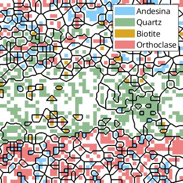

MTEX is a free Matlab toolbox for analyzing and modeling crystallographic textures by means of EBSD or pole figure data. It is developed on a free and opensource basis by an interdisciplinary
team
of material scientists, geologists and mathematicians.


News
Complete changelog
- 09/23 − MTEX 6.0.beta2 released: Release Notes
- 09/23 − MTEX 5.10.2 released: Release Notes
- 3/23 − MTEX Workshop 23: Announcement
- 9/22 − newly designed homepage
- 3/22 − addon ORTools for parent grain reconstruction
- 3/22 − MTEX GUI 3.5 by J. Hiscocks
- 7/21 − Getting Started with MTEX for EBSD Analysis by J. Hiscocks
Community
- Forum - Questions, Discussions, Announcements.
- Bugs - Every bug report is welcome.
- Helper functions - Learn how to share your own scripts.
- Contribute - MTEX is open source and adding new features is more simple then you might think.
- Workshops - lectures and exercises on the usage of MTEX.


Denoising Orientation Maps
In this section we demonstrate how random errors can be significantly reduced using denoising techniques.
Learn More
Martensite Parent Grain Reconstruction
Here we demonstrate the tools MTEX offers to reconstruct a parent austenite phase from a measured martensite phase.
Learn More
Latest Publications
All publications
Featured Addons
All Toolboxes